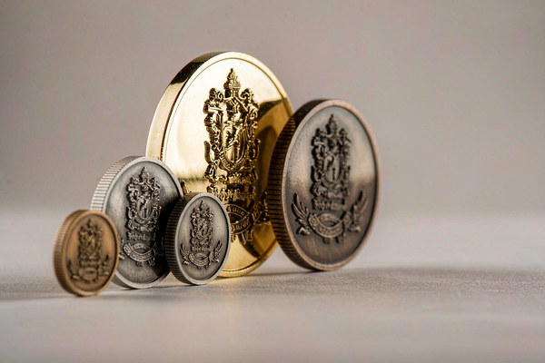
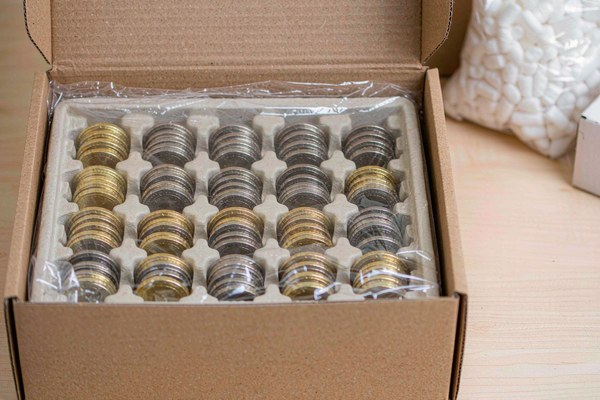

How Much Do Challenge Coins Cost?
Custom challenge coin pricing is driven by four variables before anything else: how many pieces you order, which style you choose, how large and thick the coin is, and which plating you finish it with. Every other line on a quote — packaging, freight, rush handling, art revisions — moves the total far less than those four. Understand those four and you can predict a quote before it arrives.
That sentence deserves an explanation, because it is the part most buyers get backwards. People tend to assume the coin itself is the expensive part, so they shop on the piece price alone. In reality, a large share of what you pay on a small order has nothing to do with the coin. It is tooling and setup — costs that are identical whether you make twenty pieces or two thousand.
This is why the same design can feel like a bargain at one quantity and a stretch at another. The coin did not change. The fixed portion of the bill simply got spread across more units.
| Order Quantity | Typical Per-Piece (soft enamel, 1.75", one plating) | Why It Lands There |
|---|---|---|
| 50–100 pcs | $2.80 – $4.50 | Fixed tooling and setup dominate; each coin carries a large share of them |
| 200–300 pcs | $2.00 – $3.00 | Tooling now spread across more units, per-piece drops sharply |
| 500–1,000 pcs | $1.50 – $2.20 | The practical sweet spot for most units and clubs |
| 2,000–3,000 pcs | $1.10 – $1.70 | Metal and labor dominate; fixed cost is nearly invisible |
| 5,000+ pcs | $0.90 – $1.40 | Savings come from process tuning and freight efficiency |
These are indicative factory-direct ranges for 2026, for a standard 1.75-inch soft enamel coin with one plating and no extras. Your size, style, and finish move the number — treat them as a sanity check when reading a supplier quote, not as a firm price.
Below, we break down every element that shapes a quote, in the order it actually matters. If you are comparing suppliers right now, jump to the section on reading a quote — it will save you the most time.
Why Challenge Coin Quotes Vary So Widely Between Suppliers
Two suppliers can quote the same coin and land in genuinely different places, and it usually has nothing to do with quality. It comes down to who is doing the work and what they choose to bundle.
A factory-direct maker owns the tooling, the plating line, and the polishing benches. Their quote carries the real manufacturing cost plus a margin. A reseller or broker sits between you and that factory, adding a layer on top. A domestic sales office with offshore production sits somewhere in between, adding service and communication support along with cost.
None of these models is wrong. A reseller who answers your emails at midnight, catches a design flaw before it goes to tooling, and manages freight on your behalf is selling something real. But it is worth knowing which model you are buying from, because it explains most of the gap between two quotes.
The second reason quotes diverge is bundling. Some suppliers quote a single all-in per-piece figure with tooling absorbed. Others itemize every element separately. The itemized quote often looks cheaper at first glance and ends up higher once you add the lines the all-in quote already included.
- All-in pricing: one per-piece number, tooling and setup absorbed. Easy to compare, but harder to see where the money goes.
- Itemized pricing: tooling, setup, unit cost, and extras listed separately. Transparent, but easy to under-add when comparing.
- Tiered pricing: unit price drops at set quantity breaks. Rewards planning ahead, punishes last-minute top-ups.
- Service-inclusive pricing: higher unit cost in exchange for design help, proof revisions, and managed logistics.
The Four Variables That Move Your Price
Strip away the noise and four choices account for the overwhelming majority of the difference between two quotes on the same artwork.
Order Quantity
Quantity is the single most powerful lever you control. Fixed costs — tooling, setup, color matching, first-article inspection — do not shrink when you order fewer pieces. Order twenty coins and those fixed costs are carried by twenty units. Order five hundred and the same fixed costs are carried by five hundred.
Coin Style
Style determines how many hands touch each piece. Soft enamel coins are the most economical because the process is fast and forgiving. Hard enamel coins add grinding and polishing passes. 3D coins require sculpting work before the die is ever cut. Each added stage adds labor, and labor is the part of the cost that never amortizes away.
Size and Thickness
A larger coin uses more metal, needs a bigger die, takes longer to plate, and costs more to ship. Moving up a size increment feels like a small aesthetic choice and behaves like a real cost change once you multiply it across a full run. Thickness compounds it — a thicker coin is heavier, and weight drives both material and freight.
Plating and Finish
Standard platings are routine. Specialty finishes — dual plating, rainbow anodizing, selective antiquing — require extra masking steps and extra bath time. They are worth it when the design calls for them, but they are a choice with a cost attached, not a free upgrade.
| Choice | Typical Added Cost (per piece) | Why |
|---|---|---|
| Hard enamel (vs soft) | +$0.40 – $0.90 | Extra grind and polish passes until the surface is flush |
| 3D relief (vs 2D) | +$0.60 – $1.50 + one-time sculpting | Dimensional model drives the die; deeper relief affects stamping and plating |
| Larger size (each step up) | +$0.20 – $0.50 | More metal, bigger die, longer plating, heavier freight |
| Thicker coin | +$0.10 – $0.30 | More metal weight, which also raises freight |
| Dual / specialty plating | +$0.30 – $0.70 | Masking, a second bath, and resist removal per piece |
| Decorative edge | +$0.15 – $0.40 | Extra tooling detail and finishing time |
Fixed Costs vs. Per-Piece Costs: The Distinction That Matters Most
If you take one idea from this article, make it this one. A challenge coin quote is made of two fundamentally different kinds of cost, and they behave in opposite ways as your order grows.
Fixed costs are paid once regardless of quantity. They exist whether you order thirty coins or three thousand. Per-piece costs are charged on every single unit and scale linearly with the size of your order.
This is the whole reason bulk orders feel dramatically cheaper per unit. The per-piece portion did not fall — the fixed portion just got divided by a much larger number.
| Cost Element | Fixed or Per-Piece | What It Means for You |
|---|---|---|
| Mold / tooling | Fixed | Paid once, usually stored for future reorders — ask how long it is kept |
| Die setup and machine calibration | Fixed | Same cost at any quantity, the main reason small orders feel costly |
| Digital artwork and proof | Fixed | Revisions beyond the included rounds may be billed separately |
| Base metal blank | Per-piece | Scales with size and thickness — the heavier the coin, the higher this line |
| Enamel filling and curing | Per-piece | Scales with color count and the number of fill passes required |
| Plating and finishing | Per-piece | Standard platings are routine; specialty finishes add labor steps |
| Packaging | Per-piece | Basic sleeves cost least; presentation cases add up quickly at volume |
| QC and packing labor | Per-piece | Rises with order size but benefits from repetition at scale |
| Freight | Per-piece (in effect) | Driven by total weight and volume, so size and thickness matter here too |
Reading a quote through this lens changes what you notice. A supplier quoting a very low unit price on a small order is almost certainly shifting cost into the fixed lines. A supplier quoting a higher unit price with tooling absorbed may well be cheaper overall.
How Order Quantity Changes the Math

Because fixed costs dominate small runs, the per-piece figure moves most dramatically between the smallest quantities and then flattens out. The first jump — from a handful of pieces to a modest batch — produces the biggest change. After that, each additional tier still helps, but the curve flattens.
| Order Scale | Best Suited For | How Per-Piece Cost Behaves |
|---|---|---|
| Sample or one-off | Proofing a design, executive gifts, personal keepsakes | Highest per piece — fixed costs land on very few units |
| Small batch | Squad leaders, small teams, pilot runs | Falls sharply as tooling spreads across more units |
| Mid-size run | Unit-wide issue, event giveaways, club orders | The practical sweet spot for most organizations |
| Large run | Deployment cycles, annual awards, reseller stock | Approaches the floor; metal and labor now dominate |
| Bulk production | Multi-year programs, national campaigns | Per-piece savings come from process tuning and freight efficiency |
The practical lesson: if you can reasonably predict that you will need more coins within a year or two, ordering them together almost always beats two separate small runs. You pay the fixed cost once instead of twice, and you avoid re-quoting artwork that has already been proven.
Minimum order policies deserve a note here. Many suppliers set a quantity floor because the fixed costs below that point make small runs uneconomic to schedule. Factory-direct makers can often go lower, since they are not adding a reseller layer on top of the same fixed costs. If your order is small, ask directly whether quantity changes the tooling terms rather than the unit price alone.
How Coin Style Affects the Price
Style is where design ambition meets manufacturing reality. Each style sits at a different point on the labor curve, and the differences are structural rather than arbitrary.
Soft enamel remains the most widely ordered style for good reason. The enamel is filled into stamped recesses and left slightly below the raised metal ridges. There is no grinding, no polishing, and no flush-fill step. Fewer operations means lower cost and faster turnaround, which is why it anchors most large orders.
Hard enamel fills those same recesses flush, then grinds and polishes the surface flat through multiple passes until it is smooth as glass. Every one of those passes is labor that scales with quantity rather than amortizing away. The result is a jewelry-grade finish that reads as premium, and it costs more for a reason that is easy to see on the production floor.
3D coins introduce a sculpting stage before any metal is cut. A specialist translates flat artwork into a dimensional model, and that model drives the die. The sculpting is a one-time cost, but the deeper relief also affects stamping pressure, plating coverage, and finishing time on every piece.
For a detailed side-by-side on how these finishes feel, wear, and photograph, read our comparison of soft enamel vs hard enamel, and for the dimensional question specifically, our guide to 2D vs 3D challenge coins.
Size and Thickness: Small Changes, Real Impact
Size is the most underestimated cost driver on the list, because it looks like a purely visual decision. It is not. Diameter affects metal volume, die dimensions, plating bath capacity, and shipping weight all at once.
Thickness matters for a second reason: it changes how the coin feels in the hand. A thicker coin reads as more substantial and more valuable, which is why so many buyers are tempted to move up. That is a legitimate design goal — just go in knowing it is a real line item rather than a free upgrade.
If you are weighing dimensions now, our coin size guide walks through what each size range is typically used for, which helps you pick the smallest size that still delivers the impression you want.
Plating, Edges, and the Extras That Add Up
Finishing is where a sensible design can quietly become an expensive one. Each additional operation is small on its own and compounds across a full run.
Standard platings — shiny gold, nickel, antique silver, antique bronze — are routine production. Specialty work such as dual plating requires masking the coin, running a second bath, and then removing the resist, which is several extra controlled steps per piece.
Edge treatments follow the same pattern. A plain edge is free. Decorative edges such as rope, chain, reeded, or sunburst patterns add tooling detail and finishing time. Our breakdown of challenge coin edge types shows what each one looks like so you can decide whether the upgrade is worth it for your design.
Other extras worth asking about before you approve artwork: cut-outs and irregular shapes, sequential numbering, translucent or glitter enamels, glow-in-the-dark fills, and custom back stamps. Each is achievable; each is a line item.
For the full picture on finishes, including how plating interacts with enamel and relief, see our complete guide to challenge coin plating and metal finishes.
What a Quote Usually Includes (and What It Doesn't)
This is the section that prevents the most unpleasant surprises. Suppliers differ on what is standard, and the assumptions are rarely stated on the quote itself.
| Item | Commonly Included | Frequently Extra |
|---|---|---|
| Digital proof before production | Yes, usually one or two rounds | Additional revision rounds |
| Mold / tooling | Often $80–$150, frequently waived above ~500 units | On small orders it is usually billed separately |
| Standard plating | Yes | Dual plating and specialty finishes |
| Standard edge | Yes | Decorative edge patterns |
| Basic packaging | Individual sleeves | Velvet pouches, acrylic cases, display boxes |
| Standard color matching | Solid Pantone-matched fills | Gradients, glow, glitter, translucent effects |
| Standard production lead time | Yes | Rush production and expedited handling |
| Standard shipping | Sometimes quoted separately | Express air freight, split shipments |
When two quotes differ, run them through this table first. Very often the gap is not price at all — it is one quote including something the other left out.
Hidden Costs That Catch First-Time Buyers

Every experienced buyer has been surprised by one of these at least once. None of them is unreasonable; they are just rarely volunteered.
- Tooling on reorders. Most makers store a mold for a limited period. Ask how long, and get it in writing — re-cutting a mold you thought was on file is a genuinely avoidable cost.
- Artwork revision rounds. The included rounds are finite. Consolidate feedback from your team before approving rather than sending changes one person at a time.
- Rush production. Expediting means displacing scheduled work. If your date is fixed, book early rather than paying to jump the queue later.
- Shipping method. Air and sea are not remotely comparable in cost or transit time. The cheapest unit price can lose to freight on a heavy order.
- Packaging upgrades. Presentation cases are per-piece items. At volume, they can outweigh differences in the coin itself.
- Color matching complexity. More colors means more fill passes. Simplifying a palette is one of the fastest ways to reduce unit cost without changing how the coin reads.
How to Read a Challenge Coin Quote in Five Steps
When a quote lands in your inbox, work through it in this order. It takes two minutes and catches nearly every mismatch.
- Confirm the quantity tier. Check whether the unit price you were quoted applies to the quantity you actually plan to order.
- Separate fixed from per-piece. Identify tooling, setup, and proof costs and set them aside, then compare unit costs on their own.
- Check what is bundled. Use the table above to see whether packaging, plating, and shipping are in or out on each quote.
- Verify tooling terms. How long is the mold stored, and does a reorder within that window skip the tooling charge?
- Compare total landed cost. Unit price times quantity, plus every fixed line, plus freight — that is the only number worth comparing.
The last step is the one people skip, and it is where the real answer lives. A quote that looks higher per piece can easily be lower in total once tooling and freight are included.
How to Lower Your Cost Without Cheapening the Coin
There is a right way and a wrong way to reduce a quote. Cutting metal quality, skipping plating, or shrinking the coin to save money changes what you hand someone — and these coins are meant to be kept for decades. These reductions do not.
- Right-size the coin. Choose the smallest diameter that still carries your artwork legibly. This reduces metal, weight, and freight together.
- Simplify the palette. Each additional enamel color is another fill pass. Merging two similar tones is usually invisible in the finished piece.
- Choose a standard edge. Decorative edges are attractive, but a plain or lightly textured edge keeps cost down without affecting the face of the coin.
- Consolidate your order. One production run covering the whole year beats three small ones, because you pay the fixed costs once.
- Plan ahead instead of rushing. Standard lead time costs nothing; expedited handling exists and is priced accordingly.
- Reuse existing tooling. If your organization has ordered before, ask whether the original mold is still on file before paying to cut a new one.
- Keep packaging standard. Upgrade presentation only for the pieces that need it rather than across the entire run.
Notice that none of these touch the quality of the coin itself. That is the point — the savings come from process decisions, not from making a worse object.
Bulk Challenge Coin Pricing: What Changes at Scale
Bulk challenge coin pricing is not simply a discount applied to a small-order price. At scale, the economics of the job actually change, and a few new factors appear.
First, setup efficiency improves. Once a line is running a large batch, the per-piece labor of filling, plating, and inspection drops because operators stop reconfiguring between jobs. That saving is real and it is why large runs price better than a linear extrapolation would suggest.
Second, freight shifts from a footnote to a line item worth negotiating. Weight and volume drive cost, and on a large order of thick coins this can rival the savings you gained on unit price. This is also where size and thickness decisions come back to matter.
Third, quality control becomes more systematic. Larger runs justify sampling plans, first-article approval, and in-process checks that a small order would never trigger. You get more consistency, not just a lower number.
Finally, storage and distribution start to matter. A bulk order is a physical inventory commitment. Splitting shipment to multiple addresses or holding stock at the factory are both options worth raising before you commit, not after.
Factory-Direct vs. Reseller: Why the Same Coin Costs Different Amounts
Buying factory-direct removes a layer. There is no middle margin, and questions about tooling, plating, or process get answered by the people actually running the equipment. For buyers who know what they want and can read a technical quote, this is usually the most efficient path.
A reseller adds cost and adds service. They handle artwork cleanup, chase proofs, consolidate freight, and absorb communication friction. For an organization placing one order a year with no internal design resource, that service has genuine value.
The mistake is comparing the two on unit price alone. Compare the total landed cost and the amount of your own time either option requires. Both are real costs; only one appears on the quote.
When Paying More Is Actually the Smarter Buy
There are moments when the cheaper quote is the expensive one, and they almost always involve something you cannot easily fix after delivery.
Plating quality is the clearest example. A thin or poorly controlled plating layer looks acceptable on the day it arrives and dulls or wears through within a year. A coin meant to mark service or commemorate an event should not have a lifespan measured in months.
Proof accuracy is the second. A supplier who invests in a detailed digital proof and catches a text error before tooling saves you an entire production run. That diligence is worth more than a small difference in unit price.
And consistency matters at volume. A quote that is slightly higher per piece but delivers uniform color and clean edges across a thousand units beats a cheaper quote where the last two hundred look different from the first.
Ready to Design Your Custom Coins?
Get a free quote and digital proof in 12 hours. Our team will help you refine your design for the best possible result.
Get Free QuoteFrequently Asked Questions
How much do challenge coins cost?
For a standard 1.75-inch soft enamel coin with one plating, expect roughly $2.80–$4.50 per piece at 50–100 units, $1.50–$2.20 at 500–1,000, and under $1.40 each above 5,000. Those are indicative factory-direct ranges for 2026 — your size, style, and finish move the number. A quote still combines fixed costs (tooling, setup, proof) with per-piece costs (metal, enamel, plating, labor), and order quantity decides how thinly the fixed portion spreads. Compare the total landed cost at your real quantity, not the headline per-piece number.
Why is a small order so much more expensive per coin?
Because the fixed costs do not shrink. Tooling, die setup, machine calibration, and proofing cost the same whether you make twenty coins or two thousand. On a small order those fixed costs are shared across very few pieces, so each one carries a much larger share of them.
Is there a mold fee for custom challenge coins?
Often yes — typically $80–$150 — though many suppliers absorb it at higher quantities (commonly above ~500 units). The important question is not whether the fee exists but how long the mold is stored afterward. Most makers keep a mold for a set period, which means a reorder inside that window skips the tooling charge entirely.
What is the single biggest factor in challenge coin pricing?
Order quantity. It is the only variable that changes how the fixed portion of your cost is distributed. Style, size, and plating all matter, but they scale with the order, while quantity determines how thinly the fixed costs get spread.
How can I reduce the cost without lowering quality?
Right-size the coin, simplify the color palette, choose a standard edge, consolidate multiple small orders into one run, plan ahead to avoid rush fees, reuse existing tooling, and keep packaging standard for most of the run. None of these changes the quality of the coin itself.
Does a thicker or larger coin cost significantly more?
Yes, and more than most buyers expect. Diameter and thickness drive metal volume, die size, plating bath time, and shipping weight simultaneously. Choose the smallest size that still carries your artwork legibly and the saving compounds across the whole order.
Are bulk orders always cheaper per piece?
Nearly always, because fixed costs spread across more units and production runs more efficiently at scale. The two things that can erode the gain are freight — which grows with weight and volume — and packaging upgrades, which are charged per piece.
Why did two suppliers quote different prices for the same design?
Usually because they bundled differently rather than priced differently. One may have included tooling, plating, packaging, or shipping that the other listed separately. Separate the fixed costs from the per-piece costs, check what each quote includes, then compare total landed cost.
Should I choose factory-direct or a reseller?
Factory-direct usually costs less and gives you direct access to the people making technical decisions, which suits buyers who know what they want. A reseller adds cost but handles artwork, proofs, and logistics. Compare total landed cost and the amount of your own time each option requires, since only one of those appears on the quote.